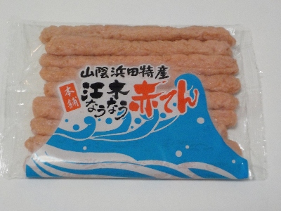
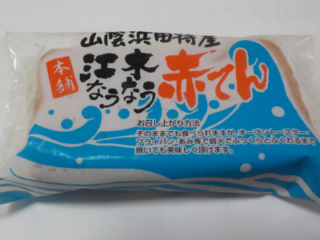
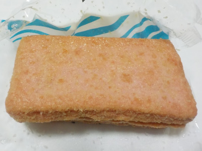

江木蒲鉾店のなうなう赤てんスティック
更新日 : 2024/05/04

ピリピリっとした辛さが印象に残る蒲鉾でした。
スティック状にしたのは何故でしょう？オフィシャルによると「気軽に食べやすい」だそうです。
もっと小さい方がたべやすいんじゃないかな？
島根県浜田市朝日町1426-4
更新日 : 2024/05/04

ピリピリっとした辛さが印象に残る蒲鉾でした。
スティック状にしたのは何故でしょう？オフィシャルによると「気軽に食べやすい」だそうです。
もっと小さい方がたべやすいんじゃないかな？
更新日 : 2019/10/25
江木なうなう赤てんです。

本舗なんですね。やっぱり元祖とか、本家なんかもあるのかな。

この赤てんは、魚の味も野菜の味も唐辛子の味もしっかりあって美味しい。
うまみも甘いも辛いもある感じです。
赤てんって他のお店も出していますが、他にも美味しい赤てんがあるのかな？
色々食べ比べてみたいです。
2026/02/04 半額で226円で購入。